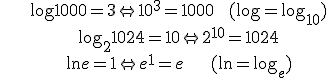
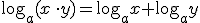
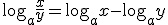
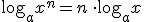
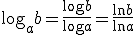
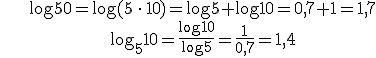
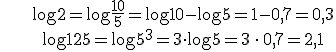

Matemática financiera
Logaritmos
El logaritmo de un número es el exponente al que hay que elevar otro número fijo, la base.
El logaritmo en base a de b, si a>0 y a≠1, es:

Ejemplos:

PROPIEDADES




Ejemplo: Si log 5 ≈ 0.7, calcula log 50, log510, log 2 y log 125


Ejercicios:
1.- Calcula:

2.- Si log2≈0,3, calcula:
a) log 2000=
b) log 25=
c) log 0,2=
Soluciones:

Obra publicada con Licencia Creative Commons Reconocimiento No comercial Compartir igual 4.0